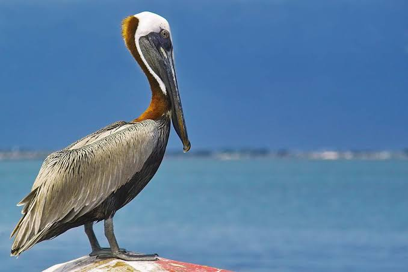

Pelican
Birds
Pelicans are a genus of large water birds that make up the family Pelecanidae. They are characterised by a long beak and a large throat pouch used for catching prey and draining water from the scooped-up contents before swallowing.
Family: Pelecanidae; Rafinesque, 1815
Lifespan: 15 – 25 years (In the wild)
Scientific name: Pelecanus
Class: Aves
Wingspan: 1.8 – 3.5 m (Adult)
Mass: Brown pelican: 3.4 kg, Great white pelican: 9.3 kg
Pelican, any of seven or eight species of water birds in the genus Pelecanus constituting the family Pelecanidae (order Pelecaniformes), distinguished by their large elastic throat pouches.
Pelicans inhabit lakes, rivers, and seacoasts in many parts of the world. With some species reaching a length of 180 cm (70 inches), having a wingspan of 3 metres (10 feet), and weighing up to 13 kg (30 pounds), they are among the largest of living birds.
Pelicans eat fish, which they catch by using the extensible throat pouch as a dip-net. The pouch is not used to store the fish, which are swallowed immediately.
One species, the brown pelican (Pelecanus occidentalis), captures fish by a spectacular plunge from the air, but other species swim in formation, driving small schools of fish into shoal water where they are scooped up by the birds.
Pelicans lay one to four bluish white eggs in a stick nest, and the young hatch in about a month. The young live on regurgitated food obtained by thrusting their bills down the parent’s gullet. The young mature at three to four years.
Though ungainly on land, pelicans are impressive in flight. They usually travel in small flocks, soaring overhead and often beating their wings in unison. The sexes are similar in appearance, but males are larger.
The best-known pelicans are the two species called white pelicans: P. erythrorhynchos of the New World, the North American white pelican, and P. onocrotalus of the Old World, the European white pelican.
Between 1970 and late 2009, the smaller, 107–137-cm brown pelican was listed as endangered by the U.S. Fish and Wildlife Service. Though the brown pelican once bred in enormous colonies along New World coasts, its population declined drastically in North
America during the period 1940–70 as a result of use of DDT and related pesticides. The birds’ breeding improved after DDT was banned.
Biology of Pelican
Etymology
The genus Pelecanus was first formally described by Linnaeus in 1758 in the tenth edition of his Systema Naturae'. He described the distinguishing characteristics as a straight bill hooked at the tip, linear nostrils, a bare face, and fully webbed feet.
This early definition included frigatebirds, cormorants, and sulids, as well as pelicans. The name comes from the Ancient Greek word pelekan (πελεκάν), which is itself derived from the word pelekys (πέλεκυς) meaning "axe". In classical times, the word was applied to both the pelican and the woodpecker.
Living species
The eight living pelican species were traditionally divided into two groups, one containing four ground-nesters with mainly white adult plumage (Australian, Dalmatian, great white, and American white pelicans), and one containing four grey- or brown-plumaged
species which nest preferentially either in trees (pink-backed, spot-billed and brown pelicans), or on sea rocks (Peruvian pelican).
The largely marine brown and Peruvian pelicans, formerly considered conspecific, are sometimes separated from the others by placement in the subgenus Leptopelicanus but in fact species with both sorts of appearance and nesting behavior are found in either.
DNA sequencing of both mitochondrial and nuclear genes yielded quite different relationships; the three New World pelicans formed one lineage, with the American white pelican sister to the two brown pelicans, and the five Old World species the other.
The Dalmatian, pink-backed, and spot-billed were all closely related to one another, while the Australian white pelican was their next-closest relative. The great white pelican also belonged to this lineage, but was the first to diverge from the common
ancestor of the other four species. This finding suggests that pelicans evolved in the Old World and spread into the Americas, and that preference for tree- or ground-nesting is more related to size than genetics.
Distribution and habitat
Modern pelicans are found on all continents except Antarctica. They primarily inhabit warm regions, although breeding ranges extend to latitudes of 45° South (Australian pelicans in Tasmania) and 60° North (American white pelicans in western Canada).
Birds of inland and coastal waters, they are absent from polar regions, the deep ocean, oceanic islands (except the Galapagos), and inland South America, as well as from the eastern coast of South America from the mouth of the Amazon River southwards.
Subfossil bones have been recovered from as far south as New Zealand's South Island, although their scarcity and isolated occurrence suggests that these remains may have merely been vagrants from Australia (much as is the case today).
Behaviour and ecology
Pelicans swim well with their strong legs and their webbed feet. They rub the backs of their heads on their preen glands to pick up an oily secretion, which they transfer to their plumage to waterproof it.
Holding their wings only loosely against their bodies, pelicans float with relatively little of their bodies below the water surface.
They dissipate excess heat by gular flutter – rippling the skin of the throat and pouch with the bill open to promote evaporative cooling. They roost and loaf communally on beaches, sandbanks, and in shallow water.
A fibrous layer deep in the breast muscles can hold the wings rigidly horizontal for gliding and soaring. Thus, they use thermals for soaring to heights of 3000 m (10,000 ft) or more, combined both with gliding and with flapping flight in V formation, to commute distances up to 150 km (93 mi) to feeding areas.
Pelicans also fly low (or "skim") over stretches of water, using a phenomenon known as ground effect to reduce drag and increase lift. As the air flows between the wings and the water surface, it is compressed to a higher density and exerts a stronger upward force against the bird above. Hence, substantial energy is saved while flying.
Breeding and lifespan
Pelicans are gregarious and nest colonially. Pairs are monogamous for a single season, but the pair bond extends only to the nesting area; mates are independent away from the nest.
The ground-nesting (white) species have a complex communal courtship involving a group of males chasing a single female in the air, on land, or in the water while pointing, gaping, and thrusting their bills at each other.
They can finish the process in a day. The tree-nesting species have a simpler process in which perched males advertise for females.
The location of the breeding colony is constrained by the availability of an ample supply of fish to eat, although pelicans can use thermals to soar and commute for hundreds of kilometres daily to fetch food.
The Australian pelican has two reproductive strategies depending on the local degree of environmental predictability. Colonies of tens or hundreds, rarely thousands, of birds breed regularly on small coastal and subcoastal islands where food is seasonally or permanently available.
In arid inland Australia, especially in the endorheic Lake Eyre basin, pelicans breed opportunistically in very large numbers of up to 50,000 pairs, when irregular major floods, which may be many years apart, fill ephemeral salt lakes and provide large amounts of food for several months before drying out again.
Feeding
The diet of pelicans usually consists of fish,[50] but occasionally amphibians, turtles, crustaceans, insects, birds, and mammals are also eaten.
The size of the preferred prey fish varies depending on pelican species and location. For example, in Africa, the pink-backed pelican generally takes fish ranging in size from fry up to 400 g (0.9 lb) and the great white pelican prefers somewhat larger
fish, up to 600 g (1.3 lb), but in Europe, the latter species has been recorded taking fish up to 1,850 g (4.1 lb). In deep water, white pelicans often fish alone. Nearer the shore, several encircle schools of small fish or form a line to drive them
into the shallows, beating their wings on the water surface and then scooping up the prey. Although all pelican species may feed in groups or alone, the Dalmantian, pink-backed, and spot-billed pelicans are the only ones to prefer solitary feeding.
When fishing in groups, all pelican species have been known to work together to catch their prey, and Dalmantian pelicans may even cooperate with great cormorants. They catch multiple small fish by expanding the throat pouch, which must be drained above the water surface before swallowing. This operation takes up to a minute, during which time other seabirds may steal the fish.
Populations
Globally, pelican populations are adversely affected by these main factors: declining supplies of fish through overfishing or water pollution, destruction of habitat, direct effects of human activity such as disturbance at nesting colonies, hunting and culling, entanglement in fishing lines and hooks, and the presence of pollutants such as DDT and endrin.
Most species' populations are more or less stable, although three are classified by the IUCN as being at risk. All species breed readily in zoos, which is potentially useful for conservation management.
Pelecanus occidentalis, Tortuga Bay, Island of Santa Cruz, Galápagos
The combined population of brown and Peruvian pelicans is estimated at 650,000 birds, with around 250,000 in the United States and Caribbean, and 400,000 in Peru.[a] The National Audubon Society estimates the global population of the brown pelican at 300,000.
Numbers of brown pelican plummeted in the 1950s and 1960s, largely as a consequence of environmental DDT pollution, and the species was listed as endangered in the US in 1970. With restrictions on DDT use in the US from 1972, its population has recovered, and it was delisted in 2009.
Poisoning and pollution
DDT pollution in the environment was a major cause of decline of brown pelican populations in North America in the 1950s and 1960s. It entered the oceanic food web, contaminating and accumulating in several species, including one of the pelican's primary food fish – the northern anchovy.
Its metabolite DDE is a reproductive toxicant in pelicans and many other birds, causing eggshell thinning and weakening, and consequent breeding failure through the eggs being accidentally crushed by brooding birds.
Since an effective ban on the use of DDT was implemented in the US in 1972, the eggshells of breeding brown pelicans there have thickened and their populations have largely recovered.